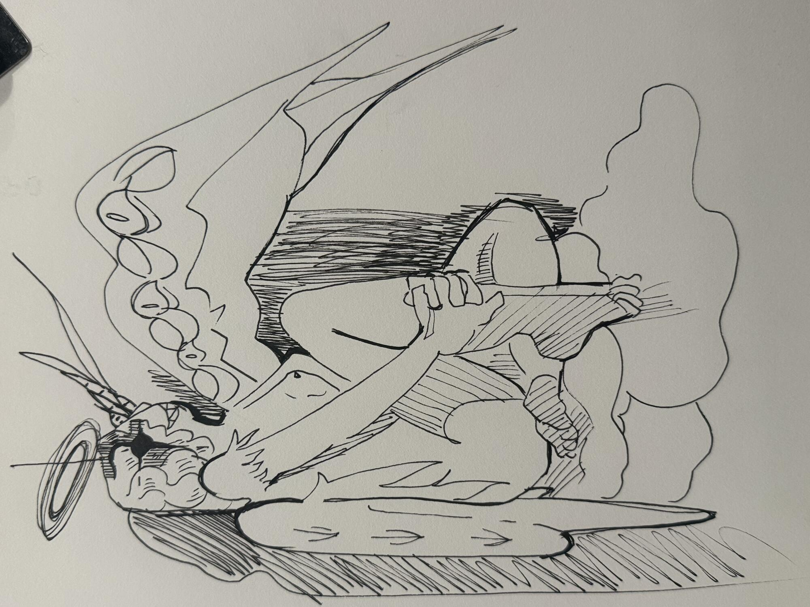

Art Page
place to show some of my art! ill probably be messing around with different layouts but I wanted to actually start this page
you can see more of my art on my art instagram, I changed my name on there recently so I feel a bit more comfortable sharing.
Instagram is posted based on the time i made it. Here I kinda make like different groupings based on themes of my art. For example art of a character or subject I am painting. Also these images are also a bit more high quality and less compressed then they are on my instagram
Click the links below to see different types of work ive made :)
Figure Paintings 2026
- most of my drawing has been done at platform studios in chicago
- All of theses are of live models, painted with watercolor! (sometimes not watercolor hehe)


Figure Paintings 2025
I did a lot of figure drawing in 2025. This i mainly a highlight of my favorites. Im think about making a subpage with everything later


.JPEG)
.JPEG)
.JPEG)
.JPEG)


.JPEG)

Art of isda
Click the image to see a bigger display :)
Isda is a DnD character I made in 2023, and also kinda has become my self-insert art! I really havent had any oc's for a long time, so having one again is very fun :)


Watercolor Artwork
I really feel in love with watercolor in 2024! heres some work for clients and friends


Digtal Artwork
I dont really do to too much digtal artwork, since I don't have a great setup for it. But sometimes I end up making things on my phone or on my computer. I usually just use one layer as its a bit closer to what I am used to with traditional art. Sometimes ill do 2 layer if I want to keep the lineart and color seperate


Plein Air
Click the image to see a bigger display :)
I have been painting outside from life - Plein Air since 2018, techinally. However its been very on and off, sorta how my art life was during college. However, in 2024 I decided to start painting with watercolors whenever I would travel!
some fun facts about the trips:
- I when I was in italy, I studying how to paint portrait oil paintings - ill probably post thoses at some point
- Atlanta was the first trip I took a duo trip with my youngest sister, and her first time on a plane!
- Lake Tahoe was the first time I had painted mountains. I live in chicago, and there are no mountains here lol
- I saw so many sheep in wales it was insane! maybe Ill paint some sheep :3
- Switzerland's mountains were HUGE!